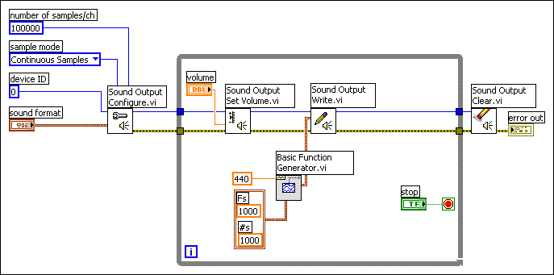

Open example�
Open example�
 Find related examples
Find related examples
Use the Sound VIs to integrate sound files and functions into your VIs. You can use these VIs to perform the following tasks:
(Windows) You must have DirectX 8.0 or later to use the Sound VIs. (Linux) You must have the Open Sound System (OSS) driver to use the Sound VIs.
Use the Sound Output VIs to generate and control a sound on an output sound device, such as a speaker or headphones. For simple operations, use the Play Waveform Express VI to play the sound data with the sound output device.
For more complex operations, use the Sound Output Configure VI to create and configure a new sound output task ID. After you create the task ID, use the Sound Output Start VI to control when the sound starts playing, use the Sound Output Stop VI to stop the sound, use the Sound Output Set Volume VI to control the volume of the sound, use the Sound Output Write VI to send the sound to a sound device, and use the Sound Output Info VI to query the sound device for information about the task ID. Use the Sound Output Clear VI to release any resources the task ID used.
Use the Sound Input VIs to acquire sound data from a sound input device, such as a microphone, into LabVIEW. Use the Acquire Sound Express VI for simple sound acquisition operations from a sound input device. For more complex operations, use the Sound Input Configure VI to create and configure a new sound input task ID.
After you create the task ID, you can change the state of the sound to running or idle using the Sound Input Start VI and the Sound Input Stop VI, respectively. Use the Sound Input Read VI to read from a sound input device. Use the Sound Input Clear VI to release any resources the task ID used.
LabVIEW stores sound data as an array of waveforms. Each waveform in the array represents a single channel. For example, an array with two waveform elements contains stereophonic, or two-channel, data. Because each channel plays simultaneously, ensure that the dt and t0 values and the number of elements in the Y array match in each waveform.
The Y array of the waveform contains Pulse Code Modulated (PCM) data. In PCM data, each element in the Y array is proportional to the amplitude of the signal. If the Y array data type is a 16-bit signed or 32-bit signed integer, the values range from the minimum to the maximum value for the data type and are centered at zero. A buffer of elements each with the value of zero represents silence. If the Y array data type is a 8-bit unsigned integer, the values range from 0�255 and are centered at 127. A buffer of elements each with the value of 127 represents silence rather than a buffer of elements each with the value of zero. This might cause an initial clicking sound with 8-bit unsigned integers. For floating-point data, the values range from -1.0 to 1.0, inclusively. The data is coerced into that range. There is no scaling.
The Sound Output Configure, Sound Input Configure, and Play Sound File VIs return task IDs, which are numbers the VIs generate to refer to the sound task at hand. Subsequent sound VIs on the block diagram use the task ID to manipulate the data in a particular sound operation. You must clear the task ID from memory before you can rerun the VI you created. Use the Sound Output Clear VI to clear a task ID for a sound output operation. Use the Sound Input Clear VI to clear a task ID for a sound input operation.
Sound devices are sound cards or other hardware attached to the computer. The value of the Device ID input of the Sound Output Configure, the Sound Input Configure, and the Play Sound File VIs specifies which sound device to use. Enter 0 in Device ID for the default sound device on the computer. Enter 1, 2, 3, and so on, for other devices.
Sound input and sound output operations use a buffer between LabVIEW and the sound device, which helps provide a smooth transmission of the sound data. Use the Sound VIs that read, write, and configure sound data to manipulate the sound buffer. The tasks these VIs create transfer the sound data between the buffer and the sound device. The task continues running until you stop the task or an error occurs.
Input operations transfer sound data from the input device to the buffer to the block diagram. Use the Sound Input Read VI to acquire the data from the device. If there is enough data in the buffer to read all the samples requested, LabVIEW reads the samples immediately. If there are more samples requested than are ready, the VI pauses execution until the request completes.
Output operations transfer sound data from the block diagram to the buffer to the output device. Use the Sound Output Write VI to transfer data to the buffer in a sound output operation. If the buffer has enough room, LabVIEW copies the data to the buffer. If the buffer does not have enough room and the buffer is configured for continuous mode, the VI pauses execution until it finishes copying all the data to the buffer.
Configuring the sound data sets the format of the buffered data. LabVIEW automatically converts the format of LabVIEW data to match the buffer data format. For example, if you configure an output task to use stereophonic data, but you write data with only one channel, LabVIEW sends the data you write to both of the stereophonic channels.
Use the Play Sound File VI and a While Loop to continually play a sound file, as shown in the following block diagram. The Play Sound File VI reads the file specified in the Sound File Path input and starts playing the sound through the sound device the Device ID input specifies. The VI returns a task ID, and the While Loop continually passes the task ID through until the sound finishes playing, an error occurs, or a users presses a stop button on the front panel. The Sound Output Clear VI clears the task ID from the computer memory.
Use the Sound VIs to configure how the sound file plays, such as the bit rate of the file and the channels through which the sound plays (mono, stereo, and so on). You also can pause, stop, and play the file at run time.
Refer to the Sound File to Sound Output VI in the labview\examples\Graphics and Sound\Sound directory for an example of generating sound data.
Open example�
Find related examples
Use the Waveform Generation VIs and the Simulate Signal Express VI to generate sound data, as shown in the following block diagram. The Simulate Signal Express VI generates a sine wave, and the Play Waveform Express VI plays the generated sound data through the sound device the Device input specifies.
Use the Sound Output VIs for more control of the sound data you generate. For example, use the Sound Output Configure VI to control the bit rate, sample rate, and number of channels of the sound and use the Sound Output Set Volume VI to control the volume of the sound, as shown in the following block diagram.

Refer to the Generate Sound VI in the labview\examples\Graphics and Sound\Sound directory for an example of generating sound data.
Open example�
Find related examples
Use the Sound File Write Simple and the Sound File Write VIs to write the data you acquire or generate to a sound file. The following block diagram uses the Sound File Write Simple VI to save a stereophonic sound that consists of a sine wave tone and a triangle wave tone of 50,000 samples each to the file the path input specifies.
Use the Sound File Write VI for more control over the creation of a sound file. The Sound File Write VI requires you to open a reference to an existing sound file or create a new sound file with the Sound File Open VI and close the reference to the sound file with the Sound File Close VI. If you do not close the sound file, the sound file stays in memory and is not accessible from other applications or to other users.
Refer to the Sound Input to File VI in the labview\examples\Graphics and Sound\Sound directory for an example of acquiring a sound and saving it to a sound file.
Open example�
Find related examples